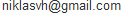

This library reads PHP code and transforms it into JavaScript code which can be run with the PHP VM in this library. The code can be directly run in your browser, meaning you can execute php code straight out of your browser!
TweetThis experiment parses the game files and builds the maps and some of the game objects from the game through WebGL. Some very basic game mechanics and physics are implemented, but there isn't really anything else than pedestrian movement possible in this version.
This library allows you to take "screenshots" of webpages or parts of it, directly on the users browser. The screenshot is based on the DOM and as such may not be 100% accurate to the real representation as it does not make an actual screenshot.
TweetThis library allows you to embed feedback forms on a website which can capture a screenshot of the current page for the user which will be sent along their feedback form.
TweetI tried to create an arithmetic calculator with purely CSS3 (no JavaScript). With stuff like calc(), attr(), counter() etc.
This page is built with only CSS3 and HTML, without using a single image, JavaScript, SVG etc.
TweetI am student currently residing in Helsinki, Finland. I am currently studying for B.Sc/M.Sc in Economics at Hanken School of Economics with Information Systems as my major and Finance as minor. I am a self-learned programmer passionate about front-end web development with currently high interest in anything HTML5 & JavaScript.
I also have experience working with PHP, MySQL, Flash, Java, VBScript and some C# & Python, but my comfort zone is definetly with the front-end technologies.
My hobbies include video editing, 3D animation, biking and floorball. I'm also a TV show addict and like vanilla ice cream.
You can contact me through Twitter, LinkedIn, Google+, GitHub or e-mail at . For support related questions regarding my libraries, please open up a ticket for the related library at GitHub.